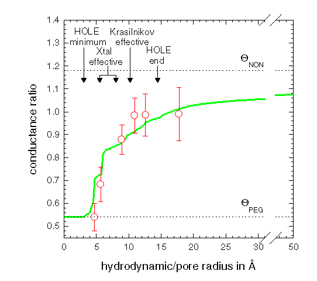

The graph compares the experimentally
found21
effect of adding polyethylene
glycol of differing molecular weight (marked by red error bars)
with that the profile
expected from HOLE calculations (the green line) on
the basis of the crystal
structure19.
The structure can be seen to be compatible with the data.
For further details see Smart et al.11


Oliver S. Smart
(last modified 20/12/96)